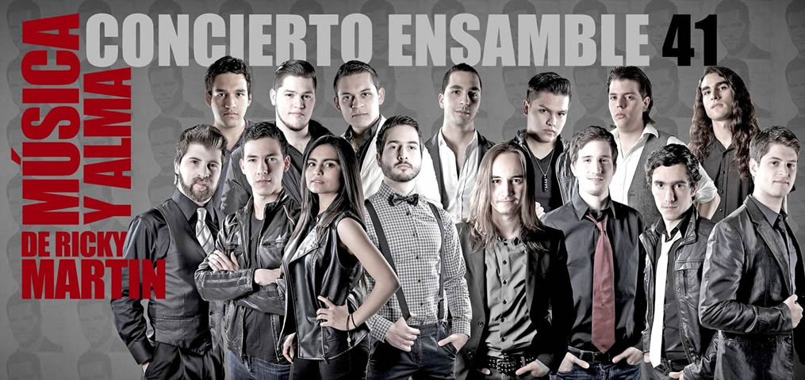

Concierto Ensamble 41

REPOSICIÓN
22, 23 y 24 de agosto
Los cantantes solistas y el conjunto musical que integra este prestigiado grupo, interpretarán de una forma creativa y acorde a su estilo, éxitos del artista latinoamericano más destacado internacionalmente en la actualidad: Ricky Martin. Este concierto, es una fiesta que además del canto, incluye coreografías, un DJ, y un espectacular diseño de iluminación. Este concierto, es una fiesta que además del canto, incluye coreografías, un DJ, y un espectacular diseño de iluminación.
Créditos
- Dirección general
- Hugo Garza Leal
- Dirección Coreográfica
- Miguel Sahagún
- Dirección Musical y de Coros
- Guillermo Palacios
- Producción Ejecutiva
- Federico Sabre
- Diseño de Escenografía
- David Molina
- Diseño y Realización de Vestuario
- Alain Garres
- Diseño de Audio
- Enrique Rodríguez
- Diseño de Iluminación
- Rubén Torres
Boletos
- Externos
- Orquesta
- $105.00
- Alumnos
- Orquesta y Luneta
- $65.00
Ubicación
Auditorio Luis Elizondo
Galeria